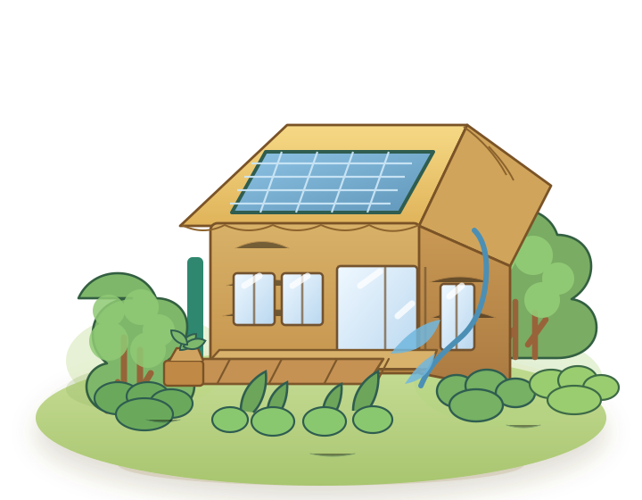

1
Ubicación
Sur de California. El clima no es muy extremo y hay muchos días de sol para usar energía solar.
Sur de California. El clima no es muy extremo y hay muchos días de sol para usar energía solar.
Adobe y cortinas opacas. Mantienen la casa fresca en verano y cálida en invierno.
Paneles solares, materiales naturales y sistema de tubería de agua. Reducen el uso de energía no renovable y ayudan a reciclar el agua de lluvia.
Aprovechar energía natural, como el calor solar. Usa menos electricidad para calefacción.
Patio interior y jardín. Mejoran el aire y conservan las zonas verdes.
